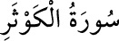

108- el-KEVSER SÛRESİ
Kevser, çok nîmet demektir; ayrıca Cennette bir havuzun ismidir. Üç âyettir.
Mekke’de mi yoksa Medîne’de mi indiği ihtilâflıdır. Müşrikler, erkek çocuklarının
ölmesi sebebiyle Allah Rasûlü’ne, nesli kesik mânâsına «ebter» dediler. Sûrede
buna cevap verilmiştir.